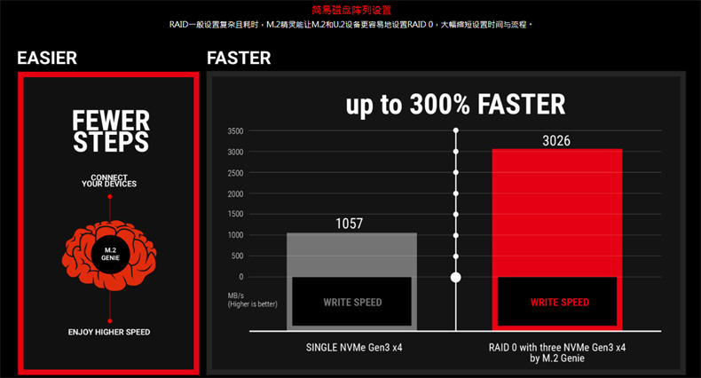

文章标题
发表时间：2019-11-10 文章浏览次数：2165 作者：pc大湿
此文于2018年6月6日更新
郑重提示：这篇文章不是鼓励大家购买Z370，目的是介绍CPU和主板的PCI-E通道的知识。
经过和微星技术沟通，下面介绍的M.2直连CPU，还是需要用微星的转接卡用在显卡插槽上，主板自带的两个M.2接口，还是走PCH的。
同样为M.2接口，但有多种不同的速度，有10Gb/s、20Gb/s、32Gb/s的。
10Gb的常见走PCI-E2.0X 2通道，20Gb/s的走PCI-E2.0 X4通道，32Gb/s走PCI-E3.0 X4通道，而这些通道大多是要经过PCH芯片组中转一次，这如同从成都飞北京，不是直飞票，要经停天津，很明显效率会低一些。
小知识：PCH芯片组
早期的intel主板有两个重要芯片组：北桥和南桥，距离CPU位置最近的这个是北桥，例如：以前我们说“845”主板、“G41”主板（注：早已淘汰），这个845、G41就是指北桥，但随着科技的发展，北桥三个最重要功能——内存控制器、PCI-E控制器和集成显卡被整合到了CPU内部，因此北桥失去了存在的必要，只剩南桥。而PCH芯片组就相当于以前的南桥。那为什么不叫南桥呢？因为没有了北，被称为南就不合适了，还是PCH名称更准确（Platform Controller Hub集中控制平台）
简单的说，PCH现在就是主板上面积最大的一个芯片组，我们常说的Z370、B360等，都是这个芯片组的型号。如果主板比喻成一个国家，这个芯片就相当于首都，是核心部分。
没有了北桥，主板自然以南桥（PCH）名称来称呼了。
由于PCH到CPU的DMI3.0总线带宽也只相当于4条PCI-E 3.0X4，而SATA、USB也要通过PCH，经过DMI3.0到CPU，如果固态硬盘速度足够快，则会发生带宽不足。DMI3.0如同一条4车道的高速路，车辆太多也会堵塞。
这时，一些厂商想到了一个办法：把M.2直连CPU。
目前第八代酷睿桌面级的处理器都只有16条PCI-E3.0通道，从i3-8100到i7-8700K 都只有16条。（注：在intel文档中，这16条都是给显卡的，给核显的4条和DMI总线的通道并不能算进去）
如果M.2占用一个显卡插槽（前提是这个显卡插槽是直连CPU的），那么显卡不会工作在PCI-E X12，而是X8。
注：此设计只能是Z370主板，因为B360、H310都不支持对CPU直连显卡的16条通道拆分，因此具备双显卡插槽的B360主板，其中有一条是绕道PCH芯片组的，这点要注意。
上图，在M.2 组建RAID 0的时候，直连CPU和走PCH的速度对比。（注：如果是一个M.2固态盘，没有这么大差距，可以不用考虑直连CPU）

这是某品牌Z370主板提供的M.2阵列软件，可以看到，采用3个NVME固态硬盘做RAID 0的时候，写入速度暴增。
这样下来，显卡还有8条3.0通道，不过还好，PCI-E X8已经可以基本满足GTX1080Ti的需求。
总的看来，M.2直连接处理器，就像一张直飞机票，确实比转机好多了。
最后再啰嗦一下，不要为了直飞机票去选Z370主板，主板还是H310/B360性价比更高，原因是一般人不会用三个M.2固态做阵列，这个做法适合预算很宽松，想体验极速的玩家（实际上，这个速度的感觉更多的是体现在跑分好看）